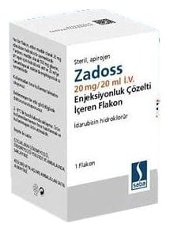

Zadoss 20 mg/20 ml I.V. Enjeksiyonluk Çözelti İçeren Flakon, 1 Adet

Ne için kullanılır
KT · Bölüm 1ZADOSS, antrasiklin adı verilen gruba dahil bir ilaçtır. Bu grup ilaçlar kanser tedavisinde (kemoterapi) kullanılır.
ZADOSS çözelti halinde renksiz bir cam şişe içinde bulunmaktadır. Her cam şişe, etkin madde olarak kırmızı-turuncu renkli, berrak, gözle görünür partikül içermeyen çözelti halinde 20 mg idarubisin (idarubisin hidroklorür şeklinde) içerir. Her kutu bir adet cam şişe içermektedir.
ZADOSS lösemi tedavisinde kullanılmaktadır.